Amplificadors operacionals i Comparadors#
Pàgina en desenvolupament
Encara estem treballant en aquest document.
Esperem oferir-vos properament el seu contingut.
Disculpeu les molèsties.
Aquests dispositius electrònics, que podem trobar com a circuits integrats, donen una sortida en funció de la diferencia de dos tensions d’entrada. Es diferencien en que l”amplificador operacional dona una resposta analògica proporcional a la diferència de tensió de les entrades i el comparador dona una sortida digital [Mal81]. Tots dos comparteixen el mateix símbol:
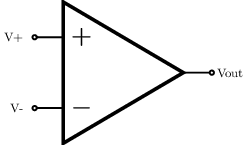
L’amplificador operacional#
El seu nom fa referència als computadors analògics, on es feien servir molt.
Aquest dispositiu dona una sortida \(V_{out} = A (V_+ - V_-)\), on \(A\) és el guany en llaç obert.
Un amplificador operacional ideal té, entre altres, aquestes característiques:
Guany infinit en llaç obert \(A = \infty\)
Impedància d’entrada infinita \(Z_{in} = \infty\) i, per tant, el corrent elèctric d’entrada és zero.
Impedància de sortida zero \(Z_{out} = 0\)
Així, una de les aplicacions típiques d’aquest dispositiu és el seguidor de tensió:
Tenim el mateix voltatge, però sense treure corrent a l’entrada (\(Z_{in} = \infty\)) i podem donar qualsevol corrent a la sortida (\(Z_{out} = 0\)). Això és especialment útil amb els sensors, on la mesura es podria falsejar sin agafem massa corrent del sensor.
En la pràctica, els amplificadors operacionals reals tenen unes característiques raonables:
\(A \gt 100000\)
\(Z_{in} \sim G\Omega\)
\(Z_{out} \sim 100\ \Omega\) però l’efecte Miller fa que baixi \(Z_{out} \sim m\Omega\) quan està realimentat [Moy05].
Els amplificadors operacionals són dispositius sofisticats. Aquí teniu l’esquema intern del 741, dissenyat al 1968 i que avui en dia encara es comercialitza:

Aplicacions dels amplificadors operacionals#
Pràcticament podem fer qualsevol operació matemàtica amb aquests dispositius:
Aplicació |
Esquema |
Sortida |
|---|---|---|
Amplificador diferencial |
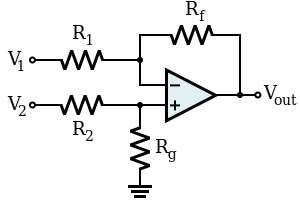 |
$\(\begin{array}{c} V_{out} = V_2 - V_1 \\ \\ \frac{R_1}{R_f} = \frac{R_2}{R_g} \end{array} \)$ |
Amplificador inversor |
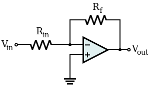 |
$\(V_{out} = - V_{in} \frac{ R_{f}}{R_{in} }\)$ |
amplificador no inversor |
$\(V_{out} = V_{in} \left( 1 + \frac{ R_2 }{ R_1 } \right)\)$ |
|
Seguidor de tensió |
$\(V_{out} = V_{in}\)$ |
|
Amplificador sumador |
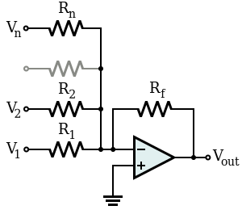 |
$\(V_{out} = -R_{f} \left( \frac{V_1}{R_1} + \frac{V_2}{R_2} + \cdots + \frac{V_n}{R_n} \right) \)$ |
Integrador inversor |
$\(V_{out}(t_1) = V_{out}(t_0) - \frac{1}{RC} \int_{t_0}^{t_1} V_{in}(t) \,dt\)$ |
|
Derivador inversor |
$\(V_{out} = -RC \frac{dV_{in}}{dt}\)$ |
|
Logaritme |
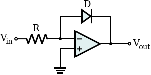 |
$\(\begin{array}{c} V_\text{out} = -V_{T} \ln \left(\frac{V_{in}}{I_{S} R}\right) \\ \\ I_S = \text{corrent de saturació} \\ \\ V_T = \text{voltatge tèrmic} \end{array} \)$ |
Exponencial |
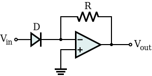 |
$\(\begin{array}{c} V_{out} = -R I_{S} e^{\frac{V_{in}}{V_{T}}} \\ \\ I_S = \text{corrent de saturació} \\ \\ V_T = \text{voltatge tèrmic} \end{array} \)$ |
Productes comercials#
El 741 encara es comercialitza, però en aquest anys han aparegut amplificadors operacionals més optimitzats, la majoria d’ells sense necessitat de ajustar l’offset. Un circuit integrat molt utilitzat és el LM324, que porta 4 amplificadors operacionals en el mateix xip, i el LM358 que en porta 2:
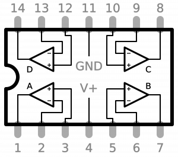 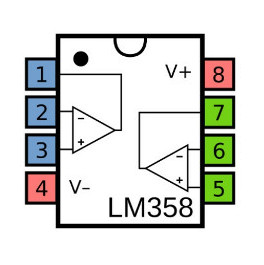
Comparadors#
Aquest dispositius donen una sortida digitals segons el signe de la diferència d’entrades:
S’utilitzen molt amb sensors, on la senyal del sensor es compara amb un valor de consigna, donant una sortida digital. Per exemple la serie KY- de mòduls per arduino utilitza molt el comparador LM393 (porta 2 comparadors al mateix integrat), com és el cas d’aquest mòdul sensor de so KY-038:
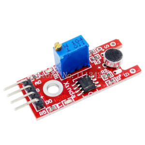 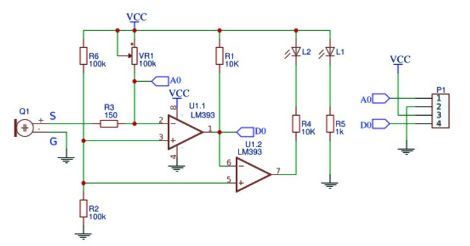
Productes comercials#
Un circuit integrat molt utilitzat és el LM393, que portaq 2 comparadors en el mateix xip:
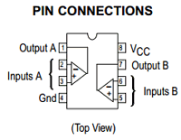